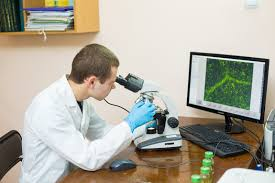
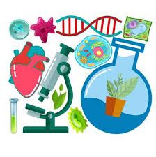
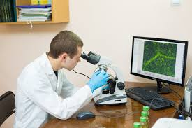
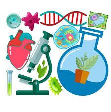

Ласкаво просимо на сайт, присвячений науковим експериментам у галузі біології! Цей ресурс створено для тих, хто цікавиться природничими науками та хоче зануритись у світ захоплюючих досліджень та експериментів. Ми пропонуємо інформацію про різноманітні наукові дослідження, які допомагають зрозуміти фундаментальні процеси життя на Землі.
Наш сайт містить: Опис біологічних експериментів: Ви знайдете прості та доступні експерименти, які можна провести як в лабораторних умовах, так і в домашніх умовах. Відео та фото: Детальні відеоінструкції та фотографії експериментів допоможуть краще зрозуміти процеси, що відбуваються в ході досліджень. Ресурси та навчальні матеріали: Ми надаємо корисні ресурси для студентів, науковців і всіх зацікавлених у біології, щоб ви могли розширити свої знання та експериментувати. Інтерактивні елементи: Опитування, тести та рейтинги допоможуть вам перевірити свої знання і дізнатися більше про біологічні процеси.
Відео
.jpg)
.jpg)
.jpg) 



Контактна інформація:
Ми завжди раді відповісти на ваші питання. Зв'яжіться з нами за допомогою наступних контактів:
Номер телефону: +380935086239
Адреса: вул. Парусна, 3,Миколаїв, Україна